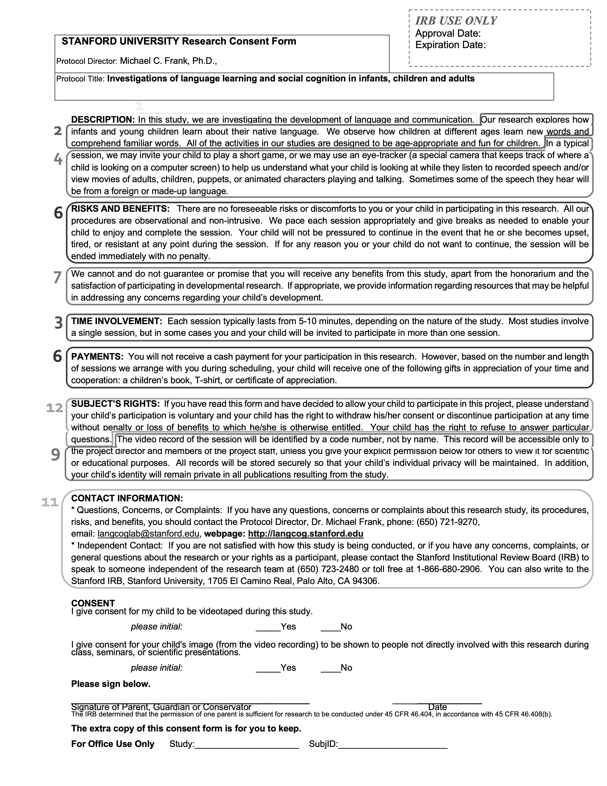
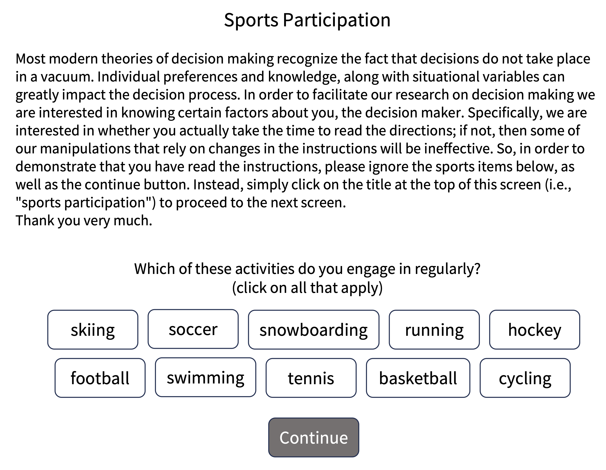
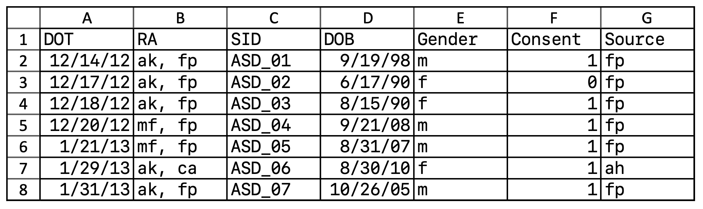

12 数据收集
- 概述知情同意和参与者 debriefing 的关键特征
- 识别与 vulnerable populations 合作时所需的额外保护
- 回顾线上和线下数据收集的最佳实践
- 实施数据完整性检查、manipulation checks 和 pilot testing
你已经选择了测量和 manipulation，也规划好了样本。预注册已经完成。现在该思考数据收集的具体事务了。虽然细节会因情境而异，本章会描述一些数据收集的一般最佳实践。1 我们会围绕两个视角组织这些实践的讨论：参与者视角和研究者视角。
1 “收集”这个比喻会让一些研究者觉得，数据独立于研究者自身视角和行动而存在，因此他们拒绝这个词，转而使用“数据生成”。遗憾的是，这个替代标签无法区分两件事：一方面是通过与参与者互动生成数据，另一方面是通过统计模拟从零生成数据。我们也担心，“数据生成”听起来太像 章 4 中谈到的欺诈性数据生成，所以我们选择保留更传统的“数据收集”标签。
第一节采取参与者视角。我们先回顾知情同意的重要性。对人类参与者开展实验的一个关键原则，是尊重他们的自主性，其中包括他们理解研究并选择是否参与的权利。当我们忽视研究对被研究者的影响时，不仅违反了管理研究的规章，也会制造不信任，从而削弱科学研究的道德基础。
第二节开始转换视角，讨论线上 vs 线下数据收集的选择，以及线上数据收集对透明度的一些优势。我们会考虑如何在两种设置中优化参与者的实验体验。最后，我们会更充分地采取实验者视角，讨论如何通过 pilot testing、manipulation checks 和 attention checks 来最大化数据质量（这有助于测量精度），同时仍然意识到参与者体验的变化和统计推断完整性（两者都有助于减少偏差）。
线上数据收集的兴起
自第二次世界大战后大学环境中的实验心理学实验室兴起以来 (Benjamin 2000)，实验通常通过所谓 “subject pool” 招募参与者来开展。这个术语指的是一群可以被招募参加实验的人，通常是心理学导论课程的学生 (Sieber 和 Saks 1989)，他们需要完成一定数量的实验作为课程作业的一部分。 这个方便总体随手可得，不可避免地导致本科生在已发表心理学研究中被大量过度代表，从而削弱了研究的可推广性 (Sears 1986; Henrich, Heine, 和 Norenzayan 2010)。
然而，过去几十年中，数据收集发生了一场革命。研究者越来越少只关注大学本科生，而是越来越多地从 Amazon Mechanical Turk 和 Prolific Academic 这类 crowdsourcing 网站招募个体。Crowdsourcing 服务最初是为了招募并支付工作者完成 ad hoc 商业任务，比如重新录入收据；但它们也已经成为连接研究者和研究参与者的市场，后者愿意为了小额报酬完成调查和实验任务 (Litman, Robinson, 和 Abberbock 2017)。截至 2015 年，顶级社会和人格心理学期刊中超过三分之一的研究是在 crowdsourcing 平台上开展的（另一个三分之一仍然使用大学本科生），而这个比例很可能还在继续增长 (Anderson 等 2019)。
最初，许多研究者担心，来自线上方便样本的 crowdsourced 数据会导致数据质量下降。然而，几项研究表明，线上方便样本的数据质量通常可以与实验室方便样本相当 (Mason 和 Suri 2012; Buhrmester, Kwang, 和 Gosling 2011)。一个特别有说服力的展示是，一组线上实验成功重复了一组认知心理学经典现象；除那些要求低于 50 毫秒刺激呈现的实验以外，每个实验都取得了清楚成功 (Crump, McDonnell, 和 Gureckis 2013)。此外，正如下面会讨论的，研究者已经发展出一套工具，用来确保线上参与者理解并遵守复杂实验任务的指令。
不过，自这些初步成功之后，注意力已经从线上实验的效度转向了与 crowdworkers 打交道时的伦理挑战。2020 年，有将近 130,000 人完成了 MTurk 研究 (Moss 等 2020)。其中，估计 70% 认同自己为白人，56% 认同自己为女性，48% 的年度家庭收入低于 $50,000。一项对 crowd work 的抽样发现，平均工资只有每小时 $2.00，而且低于 5% 的工作者获得了至少联邦最低工资 (Hara 等 2018)。此外，许多实验者会根据工作者在实验中的表现，例行性拒付报酬。这些做法明显违反人类参与者研究的伦理准则，但常被机构审查委员会忽视；审查委员会可能不熟悉线上招募平台，或认为平台提供的是一种“服务”，而不是向个体支付报酬的替代路径。
随着人们更关注工作者条件 (例如 Salehi 等 2015)，线上研究最佳实践已经有了显著进展。正如下面会描述的，与线上总体合作，既需要关注同意和报酬这类标准伦理问题，也需要关注围绕参与研究的“user experience”的新问题。线上方便样本的可获得性可以改变研究节奏，例如使大型研究能够在一天内运行，而不是历时数月。但线上参与者的脆弱性不同于大学方便样本，我们必须小心确保线上研究以合乎伦理的方式开展。
12.1 知情同意和 debriefing（事后说明）
正如 章 4 中讨论的，实验者必须尊重参与者的自主性：参与者必须在同意参与之前，获知参与的风险和收益。研究者还必须在参与者完成研究后，通过 debriefing 来讨论并语境化这项研究。这里我们会看这两个过程的具体做法，最后给出关于保护尤其脆弱总体自主性所需特殊保护的指导。
12.1.1 获得同意
实验参与者必须给出同意。在多数监管框架中，对于给出同意的过程应该是什么样，有清楚的指导。通常，参与者应阅读并签署一份同意书：这份文件解释研究目标和程序，描述潜在风险和收益，并请求参与者明确同意自愿参与。表 12.1 给出了 US Office for Human Research Protections 对同意书要求的完整列表，而 图 12.1 展示了这些单项要求如何体现在我们研究中使用的一份真实同意书里。
| Requirement | |
|---|---|
| 1 | A statement that the study involves research |
| 2 | An explanation of the purposes of the research |
| 3 | The expected duration of the subject’s participation |
| 4 | A description of the procedures to be followed |
| 5 | Identification of any procedures that are experimental |
| 6 | A description of any reasonably foreseeable risks or discomforts to the subject |
| 7 | A description of any benefits to the subject or to others that may reasonably be expected from the research |
| 8 | A disclosure of appropriate alternative procedures or courses of treatment, if any, that might be advantageous to the subject |
| 9 | A statement describing the extent, if any, to which confidentiality of records identifying the subject will be maintained |
| 10 | For research involving more than minimal risk, an explanation as to whether any compensation or medical treatments are available if injury occurs |
| 11 | An explanation of whom to contact for answers to pertinent questions about the research and research subjects’ rights |
| 12 | A statement that participation is voluntary, refusal to participate will involve no penalty, and that subject may discontinue participation at any time without penalty |

由于伦理监管几乎总是在机构层面管理，你所在机构的伦理委员会通常会对同意书中应该包含哪些具体信息提供指导，而且几乎总会要求在你开始招募参与者之前批准这份表格。
提供同意信息时，研究者应该聚焦于一个人参加研究之后可能会怎么想或怎么感受。是否存在身体或情绪风险？关于这项研究，有哪些信息可能会让一个人在一开始同意参与前犹豫？我们的建议是，在同意过程中以参与者为中心，而不是以研究问题为中心。关于具体研究目标的信息，通常可以在 debriefing 时提供。2
2 一些实验者担心，告知参与者他们即将参加的研究可能会通过所谓 demand characteristics 影响他们在研究中的行为，这个概念在 章 9 中讨论过。但同意书的目标并不是解释正在被操纵的具体心理构念。相反，同意书通常聚焦于参加研究的体验（例如，参与者会被要求对图片做快速口头反应）。这类一般说明不应制造 demand characteristics。
如果有一些关于研究目标或程序的具体信息在同意阶段必须向参与者隐瞒，那么可能有理由对参与者使用欺瞒。只要欺瞒风险很低，并且能够通过更充分的 debriefing 得到有效处理，伦理委员会就可以批准欺瞒。不过，包含欺瞒的实验 protocol 在伦理审查中很可能会受到更严格审查，因为它必须由具体实验需要来证明其正当性。
在同意过程中，研究者应该向参与者解释会如何处理他们的数据。表 12.1 中的第 9 项要求包含关于数据保密性的声明，但这样的声明只是最低要求。一些现代同意书会明确描述数据的不同用途，并分别请求同意。例如，图 12.1 中的表格请求允许在报告中展示录音。3
3 一些伦理委员会会要求即便分享匿名化数据文件也要获得同意。正如 章 13 会讨论的，完全匿名化的数据通常可以在没有明确同意的情况下分享。你仍然可以选择请求参与者许可，但这种做法可能导致尴尬局面，例如，一个数据集具有异质分享权限，大多数但不是全部数据可以公开分享。围绕匿名化数据分享的规范正在变化，所以值得和你的伦理委员会讨论他们如何解释你的具体监管义务。
12.1.2 同意的前提条件
为了给出同意，参与者必须有做出决策的认知能力（competence），理解他们被要求做什么（comprehension），并知道自己有权随时撤回同意（voluntariness）(Kadam 2017)。
通常，对实验中的成年志愿者，我们默认他们具有 competence；但如果我们与儿童或其他 vulnerable populations 合作（见下文），就可能需要考虑他们是否在法律上有能力提供同意。无法自行同意的参与者，仍然应该被告知关于参加实验的信息；并且如果可能，你仍然应该获得他们的assent（非正式同意）。当一个人没有法律能力给出同意时，你必须从其法定监护人那里获得同意。但如果他们本人不同意参与，你也应该尊重他们不参与的决定，即便你之前已经获得了监护人的同意。
第二个前提是理解。与参与者口头讨论同意书是好做法，尤其当研究较复杂且在线下进行时。如果研究在线上进行，要确保参与者知道如果他们对研究有疑问，应该如何联系你。同意书本身必须对广泛受众可读，也就是说，要注意使用易懂语言和清晰格式。可以考虑提前给参与者一份同意书副本，让他们按自己的节奏阅读，思考可能有的问题，并在没有任何被胁迫感觉的情况下决定如何继续 (Young, Hooker, 和 Freeberg 1990)。
最后，参与者必须理解他们的参与是自愿的，也就是说，他们没有义务参加研究，并且始终有权随时退出。实验者不应只是陈述参与是自愿的；他们也应该注意研究环境中的其他特征，这些特征可能导致结构性胁迫 (Fisher 2013)。例如，高水平报酬可能让低收入参与者难以退出研究。同样，种族、性别和社会阶层等因素可能让参与者在中止研究时感到不适。实验者有责任提供舒适的研究环境，并尽可能避免这类胁迫因素。
12.1.3 对参与者 debrief（事后说明）
一项研究完成后，研究者始终应该对参与者 debrief。debriefing 由四部分组成：（1）感谢，（2）讨论目标，（3）解释欺瞒（如果相关），以及（4）问题和澄清 (Allen 2017)。这些部分共同为参与者的经历提供语境，并缓解研究可能造成的任何潜在伤害。
感谢。 感谢参与者的贡献！有时感谢就足够了（对于短实验），但许多研究还包括金钱补偿或课程学分。补偿应该与参与所需时间和努力相称。不同地方的补偿结构差异很大；通常，本地伦理委员会会有具体指南。
讨论目标。 研究者应该向参与者分享研究目的，目标是给出一段简短且易懂、避免技术术语的说明。当研究的某个方面看起来像是在评价参与者时，分享目标尤其重要，因为参与者常常会想知道自己与同伴相比表现如何。例如，一个孩子完成词汇识别任务后，父母可能会请求了解孩子表现。强调研究目标是测量某个特定实验效应，而不是对个体做评价和排名，可以缓解父母的担忧。4
解释欺瞒。 研究者必须在 debriefing 时揭示任何欺瞒，无论研究者觉得这个欺瞒有多小。debriefing 过程中的这个组成部分可以被看作 “dehoaxing”，因为它旨在说明研究中任何此前具有误导性或不准确的方面 (Holmes 1976)。目标既是揭示研究的真实意图，也是缓解与欺瞒相关的任何潜在焦虑。实验者应该清楚说明欺瞒发生在研究的哪里，以及为什么欺瞒对研究成功是必要的。
问题和澄清。 最后，研究者应该回答参与者提出的任何问题，或处理他们提出的任何担忧。许多研究者会利用这个机会询问参与者自己对研究目标的想法。这种做法不仅可以揭示研究设计中对参与者来说不清楚或隐藏的方面，也开启了一场讨论，让研究者和参与者都能围绕这段共同经历进行沟通。这一步也有助于识别研究造成的负面情绪或感受 (Allen 2017)。当参与者确实表达负面情绪时，研究者有责任分享参与者可以使用的求助资源。5
4 研究结束时，你也可以考虑向参与者分享任何发现；许多参与者会欣赏了解到自己贡献过的研究发现，即使是在参与后数月或数年。
5 在参与者报告对实验有实质担忧或负面反应的情形中，无论是在 debriefing 时还是其他时候，研究者通常有义务向伦理委员会报告这些情况。
12.1.4 Vulnerable populations（脆弱人群）的特殊考虑
无论谁参与研究，研究者都有义务保护参与者的权利和福祉。有些总体被认为尤其脆弱，因为他们的 agency 较低，无论是在一般意义上，还是在面对可能有胁迫性的情境时。与这些总体开展研究会受到额外监管审查。本节会考虑几个 vulnerable populations。
儿童。 儿童是研究中最常见的 vulnerable populations 之一，因为发展研究既可以促进儿童福祉，也可以增进我们对人类心智的理解。在美国，18 岁以下儿童只有在获得父母或监护人书面同意后才能参与研究。除非他们还处于前语言阶段，否则还应该请求儿童本人的 assent。 聚焦儿童的研究，其相关风险也必须不超过最小风险，除非参与者可能从参与中直接受益，或参与研究可能改善参与者被正式诊断出的 disorder 或 condition。
残障人士。 有成千上万种残障会以不同程度影响认知、发展、运动能力、沟通和决策，因此首先要记住，对这一总体的考虑会像其成员一样多样。没有法律禁止残障人士参与研究。不过，那些无法自行做决策的认知残障人士，只能在法定监护人书面同意以及本人 assent（如适用）的情况下参与。那些保有完整认知能力、但有其他残障使其难以正常参与研究的人，应获得适当协助，以获取关于研究的信息，包括参与的风险和收益。
被监禁人群。 仅在美国，就有近 210 万人被监禁 (Gramlich 2021)。由于早期曾把囚犯作为无法提供同意的方便总体来使用，而且这种做法令人厌恶，保护囚犯免受研究伤害一直是保护工作的重点。US Office for Human Research Protections（OHRP） 只在非常有限的情况下支持他们参与研究，通常是当研究专门聚焦与被监禁人群相关的问题时 (Office for Human Research Protections 2003)。当研究者提议研究被监禁个体时，本地伦理委员会必须重组，至少包括一名在押囚犯（或能够从囚犯视角发言的人），并确保委员会中少于一半成员与公共或私人监狱系统有任何关系。重要的是，研究者不得暗示或承诺参与会对个人刑期或假释资格产生任何影响，而且补偿也必须与其贡献相称。
低收入群体。 资源较少的参与者可能更容易被金钱激励说服参加研究，从而制造一种潜在胁迫情境。研究者应该咨询本地伦理委员会，以符合当地关于非胁迫性付款的标准。
原住民群体。 在未获同意的情况下让原住民群体参与研究，有很长且负面的历史。如果一项研究需要原住民个体参与，不是出于方便，而是因为可能有益于其社区，那么必须让社区领导参与进来，讨论研究是否合适，以及同意过程应该如何组织 (Fitzpatrick 等 2016)。
Crowdworkers。 伦理委员会通常不会把 Amazon Mechanical Turk 这类平台上的 crowdworkers 视为一个特定 vulnerable population，但关于自主性降低和更需要保护的许多相同担忧仍然会出现（见下面的 depth 框）。在没有平台或伦理委员会标准的情况下，个体实验者需要承诺公平报酬，理想情况下应达到或超过适用最低工资（例如美国联邦最低工资）。此外，在 Amazon Mechanical Turk 这类声誉管理系统语境中，参与者可能因退出实验而受到惩罚：一旦他们的工作被实验者“拒绝”，他们就可能更难找到新工作，从而严重长期损害其在平台上的收入能力。
12.2 设计“研究体验”
对多数心理学实验而言，决定参与者对实验有正面还是负面体验的最大因素，并不是实验的风险档案，因为对许多心理学实验来说，参与者面临的可量化风险很低。6 相反，关键是参与者的体验。他们感到受欢迎吗？他们理解指令吗？软件是否按设计运行？报酬是否被清楚描述并及时发放？这些“user experience”方面，对确保参与者在研究中有良好体验（伦理上的必要条件）以及收集好数据都至关重要。一个让参与者不开心的实验，通常既无法满足研究的伦理目标，也无法满足科学目标。本节会讨论如何优化线下和线上实验的研究体验，并提供一些关于如何在这两种实施语境之间做选择的指导。
6 当然也有例外，包括涉及更敏感内容的研究。即便在这些情况下，关注参与者体验也可能对确保良好科学结果很重要。
12.2.1 确保实验室参与者有良好体验
参与者的体验甚至在他们到达实验室之前就开始了。招募过程中的负面体验（例如同意书不清楚、沟通差或排期复杂），或前往实验室途中的负面体验（例如难以导航或找停车位），都可能让参与者沮丧，并对你的研究形成负面看法。任何能让这些体验更顺畅、更可预测的做法，例如及时沟通、经过充分测试的路线说明、预留停车位等等，都会让参与者更开心，并提高数据质量。7
7 Stanford 心理学系大楼以难以导航著称。多年来，这个看似小的问题已经导致大量参与者迟到、沮丧且慌乱。
一旦参与者进入实验室，与实验者互动的每一个方面都可能影响他们被测量到的行为 (Gass 和 Seiter 2018)。例如，一个讨人喜欢、有权威感、能清楚描述参与收益的实验者，正在遵循说服的一般原则 (Cialdini 和 Goldstein 2004)。与一个说不清楚或漠不关心的实验者相比，这种互动应该会带来对实验指令更好的遵从，从而带来更好的数据。
任何与参与者的互动都必须脚本化并标准化，使所有参与者的体验尽可能相似。缺乏标准化可能导致具有不同特征的参与者受到差异对待，这可能导致数据变异更大，甚至产生特定社会人口学偏差。一个对某一人口群体更友善、更欢迎的实验者是在以不合伦理的方式行动，而且他们也可能得到一个与预期完全不同的结果。
更重要的是，与参与者互动的实验者理想情况下不应知道每个参与者被分配到哪个实验条件。这种做法常称为 “blinding” 或 “masking”。 否则，实验者的知识很容易导致不同条件下互动中的细小差异，而这些差异反过来会影响参与者行为，产生实验者期待效应（见 章 9）。即便实验者必须知道参与者的条件分配，有时确实如此，这个信息也应该在尽可能晚的时刻揭示，以避免污染实验 session 的其他方面。8
8 在一些实验中，实验者负责实施 manipulation，因此无法对他们 masking。在这种情况下，常见做法是使用两名实验者：一名实施 manipulation，另一名（对条件 masked）收集测量。这种情况常出现在婴儿研究中，因为刺激常通过线下 puppet show 呈现；至少，行为应该由 puppeteer 之外的人编码。
12.2.2 确保线上参与者有良好体验
线上实验的设计挑战与实验室实验非常不同。由于实验程序通过网页浏览器呈现，实验者变异和潜在期待效应几乎被完全消除。另一方面，一些线上参与者一天会做很多小时任务，其中许多人还会在其他窗口或其他设备上多任务。当你的 manipulation 是参与者当天经历的几十个之一，并且你的互动被电脑屏幕上的小窗口中介时，让参与者对研究产生兴趣和投入可能困难得多。
创建线上实验体验时，我们考虑四个问题：（1）设计，（2）沟通，（3）付款政策，以及（4）有效同意和 debriefing。9
9 关于这个主题的更详细指导，见 Litman 和 Robinson (2020)。
基本 UX 设计。好的线上实验设计，是更一般的网页 user experience（UX） 设计的一个子集。如果你的网页实验互动起来令人不快，参与者很可能会困惑和沮丧。他们要么退出，要么提供较低质量的数据。一个好界面应该干净、经过充分测试，并为参与者必须输入或点击的互动提供清楚位置。如果参与者在合适时间按下按键，实验应该给出响应；否则参与者很可能会再按一次。如果参与者不确定还剩多少 trials，他们可能更容易退出实验，因此提供进度提示也很有帮助。如果他们正在执行 speeded paradigm，就应该先接受练习 trials，以确保他们在开始关键 trial blocks 之前理解实验。
沟通。许多线上研究几乎不涉及与参与者的直接接触。当参与者确实与你沟通时，响应及时且礼貌非常重要（当然，面对实验室参与者时也是如此）。不同于典型本科生参与者，crowdworker 为你的研究所做的工作可能是他们谋生方式的一部分，而研究中的一个小问题，对你来说也许很小，对他们来说却可能很重要。因此，快速解决研究中的问题，通常通过适当补偿解决，非常重要。Crowdworkers 经常追踪特定实验室和实验者的声誉 (有时通过论坛或专门软件； Irani 和 Silberman 2013)。对问题做出快速且慷慨的回应，可以确保未来 crowdworkers 不会避开你的研究。
付款政策。不清楚或惩罚性的付款政策可能对 crowdworkers 产生重大影响。我们强烈建议，只要工作者完成你的实验，就始终付款，无论结果如何。这个政策与实验室工作的标准付款政策相当。我们假设参与者是善意的：如果有人来到实验室，他们就会因实验获得报酬，即便结果显示他们没有正确执行。反对这个政策的主要论点是，一些线上市场中有一部分工作者试图通过不遵从实验来作弊（例如输入乱码，甚至使用脚本或人工智能工具快速完成研究）。我们的建议是，通过周到使用“check” trials（见下文）处理这个问题，而不是通过惩罚性不付款。参与者完成你的实验的最简单方式，应该是遵守你的指令。
同意和 debriefing。由于线上研究通常完全自动化，参与者没有机会围绕同意和 debriefing 与研究者互动。此外，他们对冗长同意书的投入可能很少。在我们的工作中，我们通常依赖简短同意声明，例如 表 12.2 中展示的我们课程中的声明。同样，debriefing 常通过一组页面完成，这些页面概括 debriefing 过程的所有组成部分（感谢参与、讨论目标、解释欺瞒如相关，以及问题和澄清）。由于这些互动非常短，尤其重要的是突出显示联系信息，以便参与者后续跟进。
| By answering the following questions, you are participating in a study being performed by cognitive scientists in the Stanford Department of Psychology. If you have questions about this research, please contact us at [CLASS EMAIL ADDRESS]. You must be at least 18 years old to participate. Your participation in this research is voluntary. You may decline to answer any or all of the following questions. You may decline further participation, at any time, without adverse consequences. Your anonymity is assured; the researchers who have requested your participation will not receive any personal information about you. |
12.2.3 什么时候在线上收集数据？
线上数据收集在行为科学中越来越普遍。此外，网页浏览器以及 Qualtrics 这类调查软件或 jsPsych (Leeuw 2023) 这类 packages，可以极大促进实验材料分享的透明度。如果读者和审稿人可以点击链接，并获得与你实验参与者相同的体验，那么实验材料的重复和复用就简单得多。总体而言，设计良好的研究会产生与实验室数据一样可靠的数据 (Buhrmester, Kwang, 和 Gosling 2011; Mason 和 Suri 2012; Crump, McDonnell, 和 Gureckis 2013)。
不过，线上数据收集并不适用于每个实验。包含大量欺瞒或诱发负面情绪的研究，可能需要实验者在场，以缓解伦理担忧或提供 debriefing。 除了伦理问题，我们还会讨论决定是否在线上进行数据收集时需要考虑的四个更广泛问题：（1）总体可获得性，（2）特定测量的可获得性，（3）特定 manipulations 的可行性，以及（4）实验长度。
总体。并不是每个目标总体都可以在线上测试。事实上，最初只有来自 Amazon Mechanical Turk 的方便样本容易用于线上研究。最近出现了新工具，允许对 crowd participants 做 prescreening，包括 Cloud Research 和 Prolific 这类网站 (Eyal 等 2021; Peer 等 2021)。10 最初看起来，在线招募儿童似乎不太可信；但在 COVID-19 pandemic 期间，大量发展数据收集转移到线上，许多研究产生了与实验室研究相当的结果 (例如 Chuey 等 2021)。11 新的非美国 crowdsourcing 平台也持续流行，使可获得的线上总体具有更大的全球多样性。
10 不过，这些工具在接触美国内外社会人口学多样总体方面仍有明显弱点：筛选工具可以移除参与者，但如果底层总体中没有多少来自某个特定人口群体的参与者，就很难收集足够大的样本。关于使用 crowdsourcing 和社交媒体网站收集多样参与者的例子，见 DeMayo 等 (2021)。
11 LookIt（https://lookit.mit.edu）这类网站现在提供复杂平台，用于托管面向儿童和家庭的研究 (Scott 和 Schulz 2017)。
线上测量。不是所有测量都可以在线上进行，尽管可用的测量越来越多。虽然线上数据收集最初局限于调查测量，包括评分和文本回答，但测量选项已经迅速扩展。jsPsych (De Leeuw 2015) 这类 libraries 的广泛使用，意味着现在可以在网页浏览器中以毫秒精度捕捉反应时；因此，多数反应时任务都相当可行 (Crump, McDonnell, 和 Gureckis 2013)。现代浏览器框架可以捕捉声音和视频 (Scott 和 Schulz 2017)。此外，即使鼠标追踪和眼动追踪这类测量也开始变得可用 (Maldonado, Dunbar, 和 Chemla 2019; Slim 和 Hartsuiker 2023)。一般来说，几乎任何不需要专门设备就能在实验室测量的变量，也可以在线上收集。另一方面，测量更广泛生理变量（例如心率或皮肤电）或更大范围身体行为（例如步行速度或姿势）的研究，在线上实现可能仍然很难。
线上 manipulations。线上实验受限于可以在浏览器窗口中创建的 manipulations 集合，但这个限制排除了许多涉及与人实时社会互动的不同 manipulations。12 同步聊天 session 可以是有用替代 (Hawkins, Frank, 和 Goodman 2020)，但它们会把实验聚焦在所说内容上，并排除现场互动中参与者可以获得的更广泛非言语线索（例如 gaze、种族、外貌、口音等等）。有创造力的实验者可以通过图片、视频和其他方法绕过这些限制。但更广泛地说，一个想在线上实施特定 manipulation 的实验者，应该问线上实现相对于实验室实现有多有说服力。如果意图是诱发某种心理状态，比如压力、恐惧或厌恶，实验者就必须在两者之间取舍：线上研究更容易招募且规模更大，而受控实验室语境可能提供更有说服力的体验。
12 所谓 moderated experiments，也就是通过同步视频聊天实施实验 session，已经广泛用于儿童线上实验，但这些设计在成人实验中不那么常见，因为它们实施起来昂贵且耗时 (Chuey 等 2021)。
线上研究的长度。最后一个担忧涉及线上研究中的注意和专注。关于线上研究的早期指导往往聚焦于让研究短而简单，理由是 crowdsourcing workers 习惯于短任务。我们的感觉是，这个指导已经不再成立。研究者越来越多地部署长而复杂的任务组，并取得相对不错的效果 (例如 Enkavi 等 2019)，也会开展重复纵向抽样 protocol (Litman 和 Robinson 2020 中有深入讨论)。与其依赖关于研究长度的硬规则，线上测试更好的做法是确保参与者体验尽可能顺畅且有吸引力。在这些条件下，如果一个实验在实验室中可行，那么它很可能在线上也可行。
线上测试工具仍在成长和变化，但它们已经足够成熟，应成为多数行为研究者基本工具箱的一部分。13
13 当然，重要的是记住，如果一个人在 crowdsourcing 平台兼职或全职工作，他们并不是更广泛国家总体的代表性样本。遗憾的是，类似 caveat 也适用于线下方便样本（见 章 10）。归根结底，研究者必须推理自己的推广目标是什么，以及这个目标是否与他们能够接触到的样本一致（无论线上还是其他方式）。
12.3 确保高质量数据
本章最后一节中，我们回顾一些关键数据收集实践，它们可以帮助研究者在尊重对参与者的伦理义务的同时，收集高质量数据。这里所说的“高质量”，尤其指数据集没有被由于误解指令、疲劳、不理解或有意忽视实验任务而产生的反应污染。
我们先讨论 pilot testing 问题；我们推荐一个系统化 pilot 程序，它可以最大化收集高质量数据的机会。接着，我们会讨论检查参与者理解和注意的实践，以及这类检查应该和不应该用于什么。最后，我们会讨论维护一致数据收集记录的重要性。
12.3.1 开展有效 pilot studies（预试）
Pilot study 是在你收集主样本之前开展的小型研究。目标是先检查实验程序和数据收集 workflow 是否正确运行，从而确保数据收集顺畅且成功。Pilot studies 也是从参与者那里获得实验任务体验反馈的机会；例如，它是否太简单、太困难或太无聊。
由于 pilot studies 通常只包含少量参与者，它们并不是研究结果的可靠指标，例如预期效应量或统计显著性（如 章 10 所讨论）。不要用 pilots 检查效应是否存在，也不要用它们为 power analysis 估计效应量。Pilots 能告诉你的是，实验程序是否可行。例如，pilot studies 可以揭示：
- 代码是否会在某些情况下崩溃
- 指令是否让相当一部分参与者困惑
- 退出率是否很高
- 数据收集程序是否没有记录目标变量
- 参与者在实验结束时是否不满
我们建议所有实验者在启动一个新实验之前，至少开展两个 pilot studies。14
14 我们尤其指部署一个新实验范式，或从一个新总体中收集数据的时候。一旦你已经用类似程序和类似样本运行过许多研究，广泛 piloting 就没那么重要。不过，任何时候只要你改变了某些东西，跑一两个 pilots 总是好的，只是为了确认你没有无意中弄坏实验。
15 紧急情况下，你甚至可以自己把实验跑很多次（虽然这并不理想，因为你很可能会漏掉许多自己已经习惯的体验方面，尤其是如果你已经调试这个实验很久）。
第一个 pilot，我们称为 non-naive participant pilot，可以使用知道实验目标并理解实验 manipulation 的参与者；这可以是朋友、合作者、同事或家人。15 这个 pilot study 的目标是确保实验可理解，参与者能够完成它，并且数据被恰当记录。你必须分析 non-naive pilot 的数据，至少要检查每个 trial 的相关数据是否被记录。
第二个 pilot，也就是你的 naive participant pilot，应该由一小组通过你计划在主研究中使用的渠道招募的参与者构成。你应该 pilot 多少参与者，取决于实验在时间、金钱和机会上的成本，以及它的新颖程度。一个全新范式可能比经过反复检验的范式更容易出错。对于一个简短的线上调查式实验，10–20 人的 pilot 是合理的。一个更耗时的实验室研究，也许只需要 pilot 两三个人。16
16 对于特别昂贵的实验，是否要运行更大的 pilot 来识别困难可能是一个两难问题，因为这样的 pilot 成本很高。在这些情况下，一种可能性是，如果不需要重大程序变更，就计划把 pilot 参与者纳入主数据集。这种情况下，预注册一个条件性测试策略会很有帮助，以避免引入数据依赖偏差（见 章 11）。例如，在计划样本为 100 名参与者的研究中，你可以预注册先运行 20 名作为 pilot 样本，并规定你只会查看他们的退出率，而不查看任何条件差异。然后预注册可以说明，如果退出率低于 25%，你将收集接下来的 80 名参与者，并分析包含最初 pilot 在内的整个数据集；但如果退出率高于 25%，你将丢弃 pilot 样本并做出修改。这个策略可以帮助你在谨慎 pilot 和保护稀有或昂贵数据之间折中。
naive pilot study 的目标是理解参与者体验的属性。参与者困惑了吗？他们是否在研究完成前退出？即便少量 pilots 也能告诉你退出率是否可能太高；例如，如果十名 pilot 参与者中有五人退出，你很可能需要重新考虑设计的某些方面。对 naive participant pilot 来说，更充分地 debrief 参与者至关重要。这种 debriefing 常采取研究结束后访谈问卷的形式。“你觉得这项研究是关于什么的？”和“我们有没有什么方式可以改善参与研究的体验？”都是有帮助的问题。通常，如果 debriefing 是互动式的，它会更有效；所以即便你正在运行线上研究，也可能想找某种方式与参与者聊天。
Piloting，尤其是用 naive participants 来优化参与者体验的 piloting，通常是一个迭代过程。我们经常启动一个实验做 naive pilot，然后从数据或参与者反馈中认识到体验可以改进。我们做一些 tweaks，然后再次 pilot。不过，要小心不要过度拟合 pilot 数据中的小差异。Piloting 应该更像 workshop 一篇 manuscript、去掉错别字，而不是做统计分析。如果有人难以理解某个特定句子，无论是在你的 manuscript 中还是在你的实验指令中，你都应该编辑它，让它更清楚！
数据记录得够多吗？
Mike 读研究生时，他所在实验室接到一个合同，要用一组实验测试非常大的一批参与者，并在一系列密集的参与者测试高峰中把他们带到实验室。他获得了向这组实验中加入一个实验的机会，从而可以测试一个比资源通常允许的大得多的样本。他很快把一个新实验写成正在进行的一系列研究的一部分，并开始部署；随后几个月，每个周末他都来实验室，帮助参与者完成测试 protocol。他满怀期待地打开数据文件，想收获这项辛苦工作的回报，却发现数据文件中缺少条件变量。虽然实验 manipulation 被正确部署了，但没有记录每个参与者被运行在哪个条件中，因此数据基本毫无价值。如果他运行过一个快速 pilot（即便是用 non-naive participants），并尝试分析数据，这个错误本可以被发现，许多参与者和实验者时间也不会被浪费。
12.3.2 测量参与者 compliance（遵从性）
你已经构建并 pilot 了实验。你几乎准备好了，但还有一类技巧可以帮助获得高质量数据：把参与者 compliance 测量整合进你的范式。收集 compliance 数据（参与者是否按预期遵循实验程序）可以帮助你量化参与者是否理解任务、是否投入 manipulation、以及是否注意完整实验体验。这些测量反过来既可以用于修改实验范式，也可以用于排除特别不 compliant 的特定参与者 (Hauser, Ellsworth, 和 Gonzalez 2018; Ejelöv 和 Luke 2020)。
下面讨论四类 compliance checks：（1）被动测量，（2）理解检查，（3）manipulation checks，以及（4）attention checks。被动测量和理解检查对提高数据质量非常有帮助。Manipulation checks 通常也有作用。相比之下，我们建议谨慎使用 attention checks。
Compliance 的被动测量。即便你没有在实验中向参与者额外询问任何内容，也常常可以仅凭他们完成实验所花的时间，判断他们是否投入了实验程序。如果你看到参与者的完成时间显著高于或低于中位数，很可能他们要么在多任务处理，要么在没有投入的情况下匆忙完成实验。17 被动测量实现成本很低，应该尽可能插入实验。18
理解检查。对于包含复杂指令或实验材料的任务（比如必须理解一段文字才能对它做判断），获得一个参与者是否理解所读或所看内容的信号会很有帮助。理解检查会询问实验指令或材料的内容，常用于这个目的。对于指令理解，最好的问题只是询问实验成功所需的知识，例如：“当你看到屏幕上闪过一个红色圆圈时，你应该做什么？”在许多平台上，可以让参与者反复阅读指令，直到他们能够正确回答。这种重复很好，因为它可以纠正参与者的误解，而不是让他们在不理解的情况下继续实验。19
Manipulation checks。如果你的实验涉及的不只是非常短暂的 manipulation，例如，如果你计划在参与者中诱发某种状态，或让他们学习某些内容，那么可以在实验中包含一个测量，用来确认 manipulation 成功了 (Ejelöv 和 Luke 2020)。这个测量称为 manipulation check，因为它测量的是条件之间某个前提差异，这个差异不是关键目标因果效应，但在因果上是这个效应的前提。例如，如果你想看愤怒是否影响道德判断，那么测量愤怒诱发条件中的参与者是否把自己评为比控制条件参与者更愤怒，是有意义的。Manipulation checks 对解释实验发现很有用，因为它们可以把 manipulation 失败与 manipulation 未能影响你的特定目标测量区分开。20
Attention checks。最后一种 compliance check 是检查参与者是否真的在关注实验。一个简单技术是加入一些具有已知且相当明显正确答案的问题（例如，“美国首都是哪里？”）。这些 trials 可以抓住那些完全忽视所有文本并“乱按按钮”的参与者，但找不到轻度不专心的参与者。有时实验者也会使用更 tricky 的 compliance checks，例如把要求参与者点击某个特定答案的指令深埋在一段问题文本中，而这段文本本来会有另一个答案（图 12.2）。这类 compliance checks 会减少所谓 satisficing 行为，也就是参与者尽可能快地阅读，只做最低限度工作以蒙混过关。另一方面，参与者可能会把这类 trials 看作实验者试图欺骗他们的信号，并对实验采取更对抗的姿态；除非这些 trial 位于实验末尾，否则这可能导致他们在设计其他方面更不 compliant (Hauser, Ellsworth, 和 Gonzalez 2018)。如果你选择包含这类 attention checks，要意识到你很可能正在减少样本中的变异，也就是用代表性换取 compliance。
17 逐页或逐元素完成时间的测量可以更加具体，因为它们可以例如识别那些根本没有阅读指定段落的参与者。
18 在某些情况下，我们认可一个变体：使用计时器强制参与者在特定页面停留一定时间。不过要小心，这种功能可能导致与参与者形成对抗关系；面对这种胁迫，许多人会选择拿出手机多任务处理，直到计时器结束。
19 如果你询问的是对实验材料而不是指令的理解，也许不想再次向参与者呈现同一段材料，以避免混淆参与者的初始理解和他们接受的暴露量。
20 Hauser, Ellsworth, 和 Gonzalez (2018) 担心 manipulation checks 本身可能改变 manipulation 的效应；我们觉得这个担忧是合理的，尤其对某些类型的 manipulations（如情绪诱发）而言。他们建议在单独研究中测试 manipulation 的 efficacy，而不是试图把 manipulation check 嵌入主研究。

文献中会以许多不同且经常不一致的方式使用所有这些检查产生的数据。我们建议你：
- 把被动测量和理解检查作为预注册的排除标准，用来排除一组（希望很小的）可能不 compliant 的参与者。
- 检查排除比例是否低，且是否在不同条件间均匀。如果排除率高，你的设计可能有更深层问题。如果排除在条件间不对称，你可能正在通过制造一种情境来损害随机化：平均而言，一个条件中纳入的参与者类型不同于另一个条件。这两种情况都会严重损害任何目标因果效应估计。
- 如果你担心 manipulation 是否有效诱发了组间差异，就部署 manipulation checks。把 manipulation check 与因变量分开分析，以检验 manipulation 在因果上是否有效 (Ejelöv 和 Luke 2020)。
- 确保你的 attention checks 不以任何方式和条件混淆；记住 章 9 中的警示故事，其中一个在不同条件间不同的 attention check 实际上创造了一个实验效应。
- 不要把这些检查中的任何一个作为协变量纳入分析模型，因为把这些信息纳入分析会损害来自随机化的因果推断，并在分析中引入偏差 (Montgomery, Nyhan, 和 Torres 2018)。21
21 纳入这些信息意味着你在“conditioning on a post-treatment variable”，正如 章 7 中描述的。在医学中，分析者区分 “intent-to-treat” analysis 和 “as-treated” analysis：前者分析所有被给药者的数据，后者根据人们实际服用了多少药来分析数据。一般来说，intent-to-treat analysis 给出可推广的因果估计。在当前情境中，如果你把 compliance 作为协变量，你的估计可能因此有偏。如果你想开展 as-treated analysis，应该进一步阅读如何执行和解释这种特定分析。
使用得当时，compliance checks 既可以提供一组有用的排除标准，也可以成为诊断和修正实验潜在问题的有力工具。
数据质量会在整个学期中变化吗？
每个反复使用同一总体收集经验数据的实验室，都会积累关于这个总体在不同情境中如何变化的“传说”。许多用大学本科生开展实验的研究者，都被教导过不要在学期末运行研究。论点是，疲惫且压力很大的学生很可能产生低质量数据。在 ManyLabs 这类多实验室合作项目兴起之前（见 章 3），这种信念几乎无法检验。
ManyLabs 3 专门旨在评估数据质量如何随学术日历变化 (Ebersole 等 2016)。这项研究在 20 个地点纳入 2,696 名参与者，重复了 13 个先前发表的发现。虽然其中只有六个发现显示出跨地点重复的强证据，但这六个效应中没有任何一个受到学期后期收集数据的实质调节。他们观察到的最大效应，是 Stroop 效应从学期开始和中期的 \(d=0.89\) 变为学期末的 \(d=0.92\)。有一些证据表明，参与者报告自己在学期末注意力较低，但这个趋势并未伴随实验效应的调节。
研究者和任何人一样，也会受到相同认知错觉和偏差影响。其中一个偏差，是在他们有时在实验中观察到的随机波动中寻找意义。通过这个过程形成的直觉，可以成为生成假设的有用提示；但要小心，不要在未经进一步检查的情况下，把它们纳入你的“standard operating procedures”。那些避免在学期末收集数据的实验室，可能毫无理由地牺牲了 10%–20% 的数据收集能力！
12.3.3 保持一致的数据收集记录
作为实验者，最糟糕的感觉之一，是回到数据目录，看到一组数据文件 run1.csv、run2.csv、run3.csv，却不知道每个文件运行了什么实验 protocol。run1 是 pilot 吗？也许通过时间戳和版本历史做一点个人考古可以告诉你答案，但没有保证。22
22 我们会在 章 13 中大量讨论这个问题。
除了以任何形式收集实际数据（例如纸质调查、视频或电脑文件），记录metadata也很重要，也就是关于你的数据的数据，包括数据收集日期、所收集的样本、实验版本和在场研究助理等相关信息。相关 metadata 会因研究而异；重要的是你要保持详细记录。Figures 12.3 和 12.4 给出了我们自己研究中的两个例子。关键特征是，它们提供了关于实验如何开展的一些持久 metadata。

%%%%%%%%%%%%%%%%%%%%%%%%%%%%%%%%%%%%%%%%%%%%%%%%%%%%%%%%%%%%%%%%%%%%%
Added a simple familiarization slide substitute that presents Bob and
shows that the experiment is about a person talking to you. Before
that, the familiarization slide was simply skipped.
%%%%%%%%%%%%%%%%%%%%%%%%%%%%%%%%%%%%%%%%%%%%%%%%%%%%%%%%%%%%%%%%%%%%%
----------------------------
November 18 2013
50 subjects | Betting | No familiarization | Friend
var participant_response_type = 1;
var participant_feature_count = 1;
var linguistic_framing = 0;
var question_type = 0;
----------------------------
November 18 2013
50 subjects | Likert | No familiarization | Friend
var participant_response_type = 2;
var participant_feature_count = 1;
var linguistic_framing = 0;
var question_type = 2;
%%%%%%%%%%%%%%%%%%%%%%%%%%%%%%%%%%%%%%%%%%%%%%%%%%%%%%%%%%%%%%%%%%%%%
The experiment now asked the subjects the referent of Bobs statement
at the bottom of the page. The previous experiments always had the
input field just below the stimuli or, in the case of 3fc hoovering
over the images did highlighted possible ones.
%%%%%%%%%%%%%%%%%%%%%%%%%%%%%%%%%%%%%%%%%%%%%%%%%%%%%%%%%%%%%%%%%%%%%
----------------------------
November 30 2013 ~ 7 pm:
50 subjects | 3 forced choice condition | No familiarization | Friend
var participant_response_type = 0;
var participant_feature_count = 1;
var linguistic_framing = 0;
var question_type = 0;12.4 本章小结：数据收集
本章同时采取了参与者和研究者的视角。我们的目标是讨论如何为双方实现良好的研究结果。在参与者方面，我们强调了实验者有责任确保稳健的同意和 debriefing 过程。我们还讨论了良好实验体验在实验室和线上场景中的重要性，即确保实验不仅以合乎伦理的方式开展，而且参与起来也令人愉快。最后，我们从研究者视角讨论了如何处理一些关于数据质量的担忧，建议广泛使用 non-naive 和 naive pilot participants，并使用理解检查和 manipulation checks。
“Citizen science” 是一场运动，旨在让更广泛的个体参与研究，因为他们对发现感兴趣并想提供帮助。在实践中，心理学中的 citizen science 项目，如 Project Implicit（https://implicit.harvard.edu/implicit）、Children Helping Science（https://lookit.mit.edu）和 TheMusicLab.org（https://themusiclab.org），都通过给参与者提供有吸引力的体验而成功。查看其中一个项目，参与一项研究，并列出让贡献数据变得有趣且容易的特征。
做一个 Turker！注册成为 Amazon Mechanical Turk 或 Prolific Academic 工作者，并完成几个任务。浏览任务列表找工作时，你感觉如何？任务的哪些特征吸引了你的兴趣？弄清如何参与每个任务有多难？获得付款需要多久？
- 关于线上研究的一篇介绍：Buhrmester, Michael D., Sanaz Talaifar, and Samuel D. Gosling (2018). “An Evaluation of Amazon’s Mechanical Turk, Its Rapid Rise, and Its Effective Use.” Perspectives on Psychological Science 13 (2): 149–154. https://doi.org/10.1177/1745691617706516.